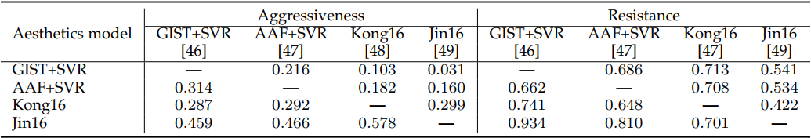
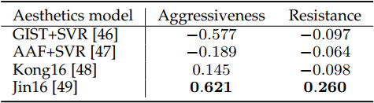
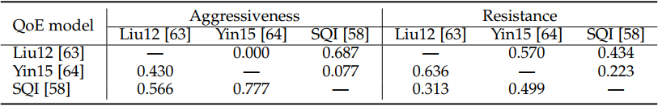
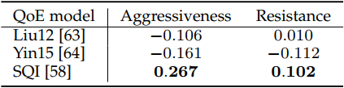

In many science and engineering fields that require computational models to predict certain physical quantities, we are often faced with the selection of the best model under the constraint that only a small sample set can be physically measured. One such example is the prediction of human perception of visual quality, where sample images live in a high dimensional space with enormous content variations. We propose a new methodology for model comparison named group maximum differentiation (gMAD) competition. Given multiple computational models, gMAD maximizes the chances of falsifying a "defender" model using the rest models as "attackers". It exploits the sample space to find sample pairs that maximally differentiate the attackers while holding the defender fixed. Based on the results of the attacking-defending game, we introduce two measures, aggressiveness and resistance, to summarize the performance of each model at attacking other models and defending attacks from other models, respectively. We demonstrate the gMAD competition using three examples—image quality, image aesthetics, and streaming video quality-of-experience. Although these examples focus on visually discriminable quantities, the gMAD methodology can be extended to many other fields, and is especially useful when the sample space is large, the physical measurement is expensive and the cost of computational prediction is low.
Instruction:
- The gMAD toolbox for IQA has a dependency upon the LIVE Image Quality Assessment database, which can be downloaded from Here.
- Download the Waterloo Exploration Database and the gMAD toolbox.
- Put your algorithm in the root folder of the toolbox, and execute the initialization script.
- After the initialization step, you can find all generated image pairs in the ./data/test_image folder, from which you may gain a first impression on how the models compete with each other.
- Execute run_subjective_test script to start subjective testing.
- Go to the ./support_functions/cvx folder and execute the cvx_setup script. Then execute data_analysis script to obtain global ranking results.
@article{ma2020group,
author = {Ma, Kede and Duanmu, Zhengfang and Wang, Zhou and Wu, Qingbo and Liu, Wentao and Yong, Hongwei and Li, Hongliang and Zhang, Lei},
title = {Group Maximum Differentiation Competition: Model Comparison with Few Samples},
journal = {IEEE Transactions on Pattern Analysis and Machine Intelligence},
volume = {42},
number = {4},
pages = {851-864},
month = {Apr.},
year = {2020}
}
@inproceeding{ma2016gmad,
author = {Ma, Kede and Wu, Qingbo and Wang, Zhou and Duanmu, Zhengfang and Yong, Hongwei and Li, Hongliang and Zhang, Lei},
title = {Group {MAD} Competition - A New Methodology to Compare Objective Image Quality Models},
booktitle = {IEEE Conferene on Computer Vision and Pattern Recognition},
pages = {1664--1673},
year = {2016}}
| Algorithm | Reference |
|---|---|
| PSNR | Peak signal-to-noise ratio |
| SSIM | Wang et al. Image quality assessment: from error visibility to structural similarity. TIP. 2004. |
| MS-SSIM | Wang et al. Multi-scale structural similarity for image quality assessment. Asilomar. 2003. |
| FSIM | Zhang et al. A feature similarity index for image quality assessment. TIP. 2011. |
| BIQI | Moorthy et al. A two-step framework for constructing blind image quality indices. SPL. 2010. |
| BLINDS-II | Saad et al. Blind image quality assessment: a natural scene statistics approach in the DCT domain. TIP. 2012. |
| BRISQUE | Mittal et al. No-reference image quality assessment in the spatial domain. TIP. 2012. |
| CORNIA | Ye et al. Unsupervised feature learning framework for no-reference image quality assessment. CVPR. 2012. |
| DIIVINE | Moorthy et al. Blind image quality assessment: from scene statistics to perceptual quality. TIP. 2011. |
| IL-NIQE | Zhang et al. A feature-enriched completely blind image quality evaluator. TIP. 2015. |
| LPSI | Wu et al. A highly efficient method for blind image quality assessment. ICIP. 2015. |
| M3 | Xue et al. Blind image quality assessment using joint statistics of gradient magnitude and Laplacian features. TIP. 2014. |
| NFERM | Gu et al. Using free energy principle for blind image quality assessment. TMM. 2015. |
| NIQE | Mittal et al. Making a completely blind image quality analyzer. SPL. 2013. |
| QAC | Xue et al. Learning without human scores for blind image quality assessment. CVPR. 2013. |
| TCLT | Wu et al. Blind image quality assessment based on multichannel features fusion and label transfer. TCSVT. 2016. |
| Algorithm | Reference |
|---|---|
| GIST+SVR | Oliva and Torralba. Modeling the shape of the scene: A holistic representation of the spatial envelope. IJCV. 2001 |
| AAF+SVR | Mavridaki and Mezaris. A comprehensive aesthetic quality assessment method for natural images using basic rules of photography. ICIP. 2015. |
| Kong16 | Kong et al. Photo aesthetics ranking network with attributes and content adaptation. ECCV. 2016. |
| Jin16 | Jin et al. Image aesthetic predictors based on weighted CNNs. ICIP. 2016. |
Pairwise Results
Global Ranking Results
| Algorithm | Reference |
|---|---|
| Liu12 | Liu et al. A case for a coordinated Internet video control plane. SIGCOMM. 2012 |
| Yin15 | Yin et al. A control-theoretic approach for dynamic adaptive video streaming over HTTP. SIGCOMM. 2015. |
| SQI | Duanmu et al. A quality-of-experience index for streaming video. JSTSP. 2017. |
Pairwise Results
Global Ranking Results
